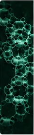

01
Materials & Processing
Engineering advanced materials and processing technologies tailored for intelligent performance.
- Material synthesis
- Functional materials
- Interfaces and coatings
- Scalable processing